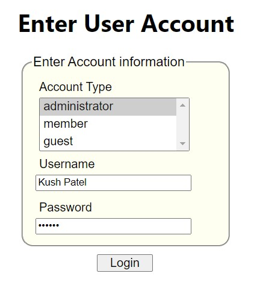
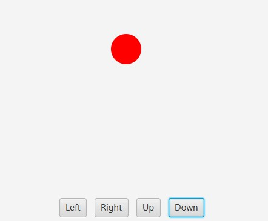
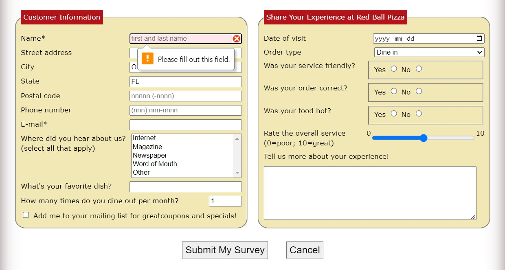
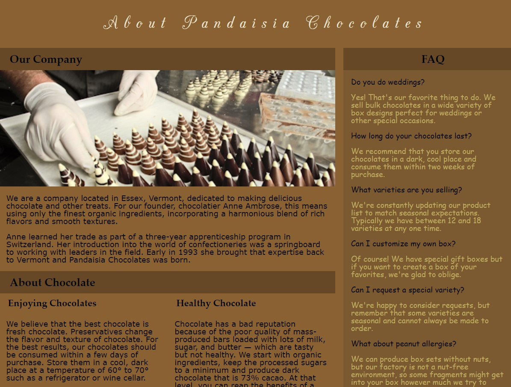

Projects/Work
Projects Gallery
   - 1. Created an amazing Curbside Thai Restaurant website in which all the tabs such as about us, locations, menu, catering, reviews and contact us are linked with each other.
- 2. Created processing forms (Enter User Account, Customer Survey) with the help of JavaScript.
- 3. Created a personal webpage for my father's company named Karori Energy Technology.
- 4. Created an event driven Java FX program in which you can move the ball with the help of control buttons left, right, up, and down.
- 5. Created a Pandaisia Chocolates website with some amazing layouts.